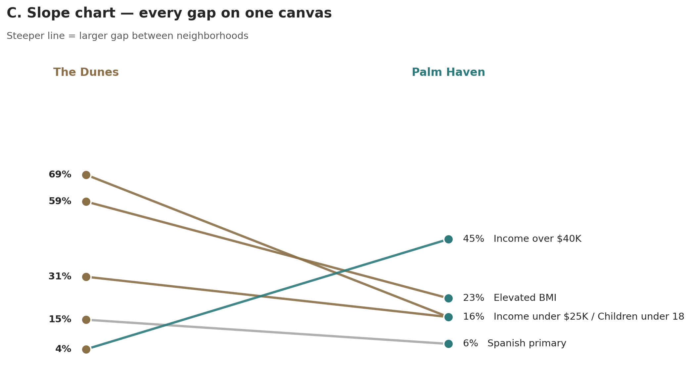
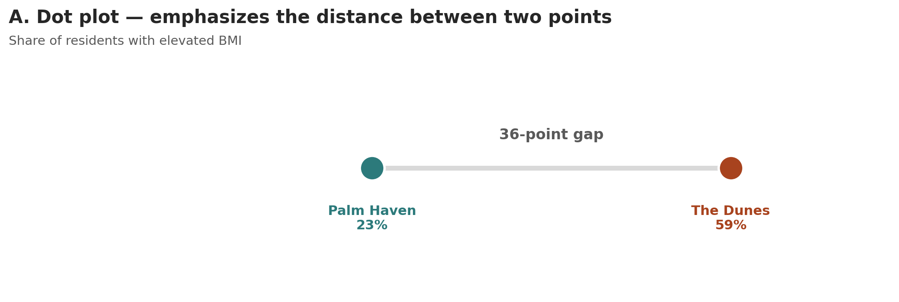
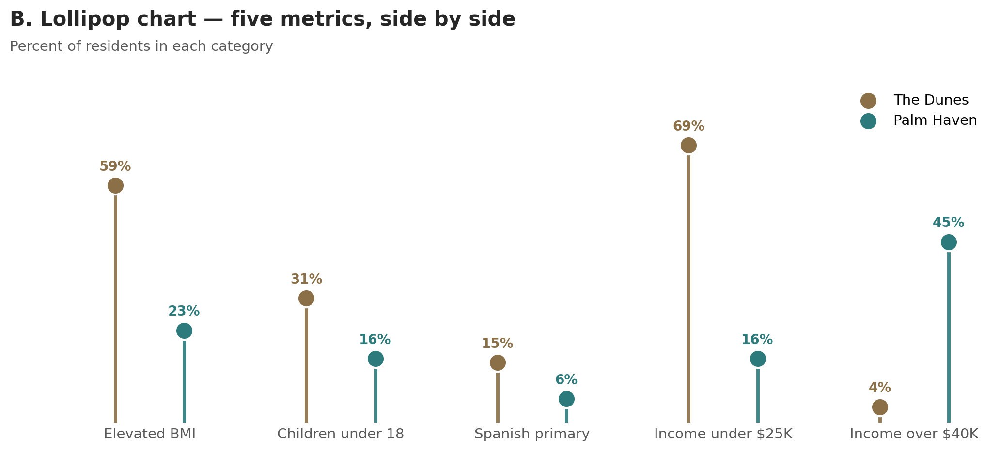
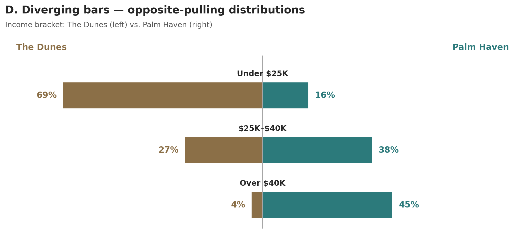

Clear City · Communications Director · 3-minute pitch
Two Neighborhoods,Two Communications Strategies
The Dunes · 1,200 residents |
Palm Haven · 800 residents
Same city. Same services. Profoundly different starting points.
Clarity ·Equity ·Access for every resident
[00:00–00:25]
Good [morning / afternoon]. I'm [your name], and I'm here to apply for
Communications Director. In the next three minutes I'll do three things —
show you a story I found in our city's data, tell you what I'd do about it,
and let the work itself show you how I'd communicate for Clear City.
~ 0:25 – 1:40
What the data shows
Two neighborhoods. One picture.

On every measure that matters, these two neighborhoods are starting in different places.
The widest gap — a 36-point difference in residents with elevated BMI — is the one we cannot ignore.
One chart, five facts ·Plain numbers ·Readable for everyone
[00:25–01:40]
One chart, two neighborhoods, five facts. The steeper the line, the bigger the gap. [pause]
The headline: fifty-nine percent of Dunes residents are at elevated weight risk —
versus twenty-three percent in Palm Haven. A thirty-six-point gap. [long pause]
Sixty-nine percent of Dunes households earn under twenty-five thousand a year.
Forty-five percent of Palm Haven households earn over forty thousand. Incomes at opposite ends.
The Dunes also has more children — about one in three residents is under eighteen —
and is two-and-a-half times more likely to use Spanish at home. [pause]
Same city. Same services on offer. Profoundly different starting points.
~ 1:40 – 2:50
What I'd do about it
Two neighborhoods. Two strategies.
The Dunes
Spanish first — written in Spanish from day one, not translated as an afterthoughtLead with health — clinics, food access, family programsTrusted messengers — schools, faith leaders, community health workersPrint, text message, in-person — meet people where they already are
Palm Haven
Digital-first — accessible to screen readers, captioned video, keyboard-friendlyLead with civic engagement — volunteering, advocacy, town hallsSelf-serve resources — clear portals, on-demand videoMonthly newsletter — opt-in, data-rich, transparent
The goal — every Clear City resident reached on a channel they use, in a language they speak, at a reading level they understand.
[01:40–02:50]
So what does this mean for Clear City? Two strategies, not one. [pause]
For The Dunes — Spanish first. Written in Spanish from day one, not translated at the end.
Plain language — short sentences, everyday words. Not because residents can't read more,
but because civic information should never be a test.
Health is the through-line. The schools, the faith communities, and community health workers
carry the message — they are the trusted messengers, not us.
Print, text message, and in-person. Not email-first. [pause]
For Palm Haven — digital-first works. Captioned video, screen-reader friendly,
keyboard-accessible — so a resident with low vision gets the same information as everyone else.
Lead with civic engagement. Self-serve, transparent, data-rich. [pause]
In my first ninety days I audit what we already publish, build the Spanish-language
and accessibility workflow, and re-mix the channels — sunset what isn't working,
stand up what is.
The goal — every Clear City resident reached on a channel they use,
in a language they speak, at a reading level they understand.
Thank you
I'd be honored
Two neighborhoods. Two strategies. One goal — every resident reached.
Backup slides follow — only navigate to them if a question warrants.
[02:50–03:00]
Thank you. I'd be honored to do this work for Clear City.
I'm happy to take any questions you have.
[Backup slides start here. Don't show during the recording.]
Appendix · zooming in on the headline
The 36-point gap, on its own

When the headline number is the entire story, two dots and a line are enough.
Use this slide if a panelist asks: "Can you show just the BMI number on its own?"
or "Do you have a simpler version?"
The dot plot is the simplest possible chart for this comparison — two values, the distance
between them. Same accuracy, fewer ingredients.
Appendix · all metrics, side by side
Every metric, paired and labeled

A different layout for the same five facts — useful if you want to read each metric independently.
Use this slide if a panelist asks: "Can you break out each metric separately?"
or "What if I want to see the numbers individually?"
This view trades the slope chart's "see all the gaps" advantage for clearer per-metric reading.
Different question, different chart. Same data.
Appendix · income, in detail
Incomes pulling in opposite directions

Same data, made visceral — the two neighborhoods literally pull in opposite directions.
Use this slide if a panelist asks: "Tell me more about the income story"
or "Why does income matter for communications channels?"
The diverging bars make the asymmetry impossible to miss — and let you tie channel choice
(print, SMS, in-person for The Dunes; digital and self-serve for Palm Haven) directly to
the data the audience is looking at.